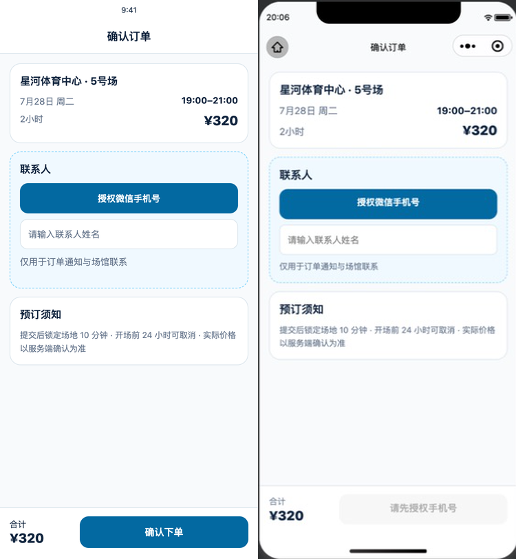
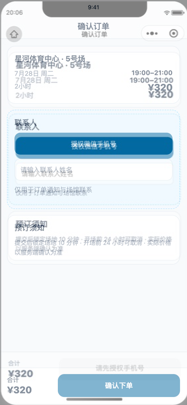
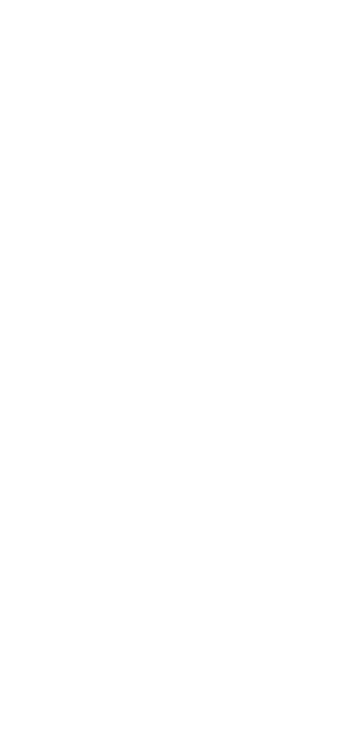

确认订单 · 375 × 812 视觉验收
参考稿与微信开发者工具真实运行时已统一到同一目标尺寸。请重点核对构图、间距、层级、字体色彩、文案及状态语义。
等待用户明确确认1. 冻结参考稿
2. 微信真实实现
3. 并排对比

4. 50% 叠加

5. 像素差异

参考稿与微信开发者工具真实运行时已统一到同一目标尺寸。请重点核对构图、间距、层级、字体色彩、文案及状态语义。
等待用户明确确认

